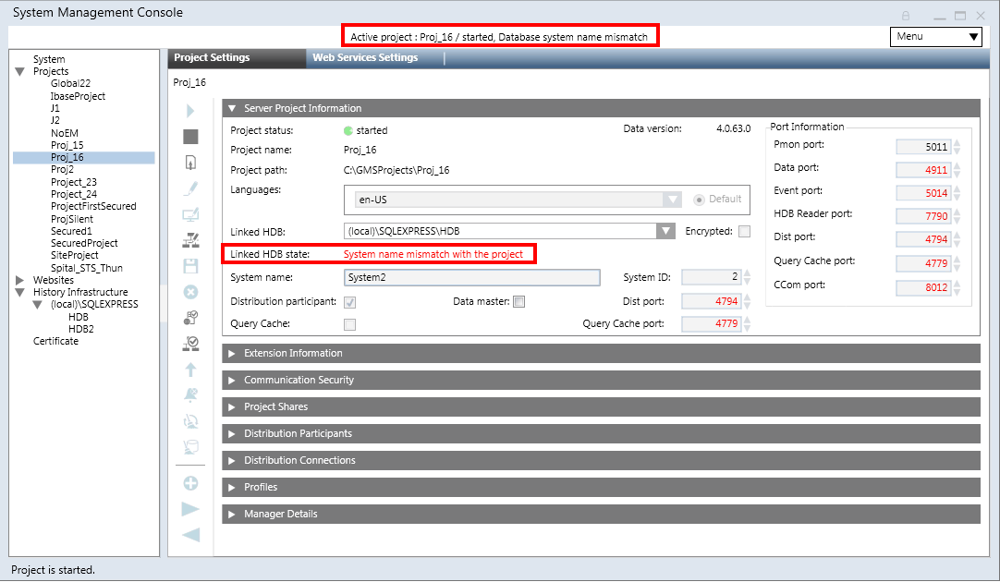
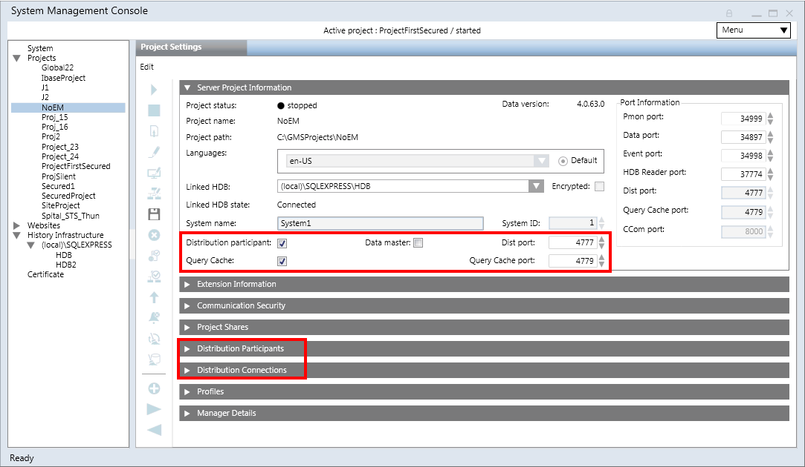

Server Project Information Expander
The Server Project Information expander displays some read-only information such as project status, project name, project path and data version (only on Server SMC) and so on while it lets you edit some project configuration when you click Edit icon  .
.
If you have configured multiple languages in the project, you can change the language of the project when editing the project (see tips) and importing the localized text from the System Libraries.
The System Name and System ID can be modified only using the Change System Info icon, whereas the database to be linked (Linked HDB) with the project can be modified at all times when you select the project.
Project Status
It indicates the status of the currently selected project, for example, started, stopped – inconsistent progs file (in red), stopped, starting, running-incomplete, stopped - last repair failed (in red), stopped - repair on next start, outdated -check on upgrade(in red), outdated (in red), stopped - inconsistent configuration file (in red), and so on.
The project status indicator allows you to check the project status. Its color and animation indicate the connection status as follows.
Project Status | ||
Appearance | The icon is... | Description |
Yellow and not animated | This icon indicates one of the following statuses: | |
Green and animated | Project is started without errors. | |
Black and not animated | This icon indicates one of the following statuses: | |
| Red and not animated | Project is |

Status: Stopped - Last Repair Failed
When a project is stopped abruptly, for example, due to system shut down, the project database may get corrupted. When you start such a project, the SMC internally attempts to repair the corrupted database. However, if this repair attempt fails, the project does not start and the Repair on next start icon becomes available.
When you click Repair on next start, it internally changes the project status to stopped - repair on next start. The next time you start the project, the SMC will attempt to repair the project database.
If you start a project whose database was corrupted, and the SMC is still internally repairing the database when the startup timeout elapses, the project status will be indicated as running - incomplete. In this case, it is recommended to wait until the database repair is complete and the project status changes to started. However, you can also stop the project.
Linked HDB State
Displays the History database linked to the currently selected project. From the Linked HDB drop-down list, it allows you to select the database from the list of available databases for linking to the project. You should link an History database to keep a log of project’s data.
You should link one History database to only one project. Linking an History database to multiple projects is not recommended. If the selected database is no longer available (deleted), it displays as Unknown (in red).
Select the Encrypted check box to encrypt the communication between a project and the History database.

The Linked HDB state is updated depending on the HDB linked to the project. The following table provides the state and its meaning:
Linked HDB State | Description |
Not reachable – secured (in red) | Database not reachable with encrypted connection |
HDB user mismatch (in red) | Pmon user does not match the HDB user in the HDB |
Access denied (in red) | Logged on user does not have access on HDB |
Not Configured (in red) | HDB is not linked to the project. |
Not reachable - unsecured (in red) | HDB is not reachable, for example, the selected HDB is deleted. |
Outdated (in red) | HDB is outdated, for example if the HDB version is different than the current HDB version. |
Connected - secured | HDB is configured in the project without errors and system name in the HDB is same as the system name of the linked project. |
System name mismatch (in red) | The system name in the HDB is different than system name of the project to which the HDB is linked. |
Unknown issue (in red) | Unknown issue with HDB. |
Maintenance not running (in red) | Automatic maintenance is not being performed on HDB. Following are the possible conditions: |
Connected – unsecured (in red) | Connection to HDB is unsecured. To make the connection secured, see Setting up Server Project with Remote HDB (SQL Server) |
Enable Distribution
On the Server SMC, when you modify the project, the Distribution participant check box is enabled. Selecting the check box has the following effects:
- enables the Dist port with the default port number as 4777.
- adds and enables the Data master check box.
- adds, enables, and selects by default the Query Cache check box and the Query Cache port field (default port number is 4779). The Query Cache internally increases the performance in case of distribution scenarios.
- adds the Distribution Participants and Distribution Connections expanders.
- enables the Project Shares expander, if the server communication of the selected project is set to standalone and the Web Server communication is
Disabled. - by default, it adds an entry for the local system (Originator project) in the Distribution participants expander.

Set Project as Data Master
Select the Data master check box that becomes available when you enable the distribution by selecting the Distribution participant check box.
Select the Data master check box to set the project as global data master. The data master is a dedicated project/system which synchronizes global data (for example, global users and global groups) to all connected systems. In a distributed system, there must be exactly one data master.
You can set the project as data master when the project is stopped as well as when it is running. When set at runtime it takes a while till the running system detects the configuration change. We recommend setting the data master when the project is stopped for configuring the distribution partners.
The data master must have access to all connected systems of the distribution (this is important for distributions which use one-way connectivity).

NOTE:
If you have a project and the Installed Client is launched, now you stopped the project and enabled the distribution and Data master (the Installed Client is disconnected but not closed), now after starting the project, you need to restart the Installed Client to take the effect of change.
Tips for Configuring and Editing Project Languages
- The default project language is used as the default language, it can only be changed when a project is stopped and not outdated.
- If you do not select a language in addition to the default, the project is created with the default (en-US) language only.
- Languages, other than the default, that become available for configuration depend on the number of language packs installed at the time of installation. The SMC does not allow you to configure more than four languages.
- You can edit the default project language by setting another language (which is added in the project) as a default language.
- You cannot add a new language after project creation or modification. However, a librarian can edit the language after project creation using the Project Settings tab in the Server Project Information expander using a
/librarianswitch. For more information, see Modifying the Language Settings of a Project.
After language edit you have to manually importing the localized texts for the edited language. - Do not change the project language after doing any libraries customization.
- Do not change the order of project languages after doing any library customization. This causes inconsistent language behavior.